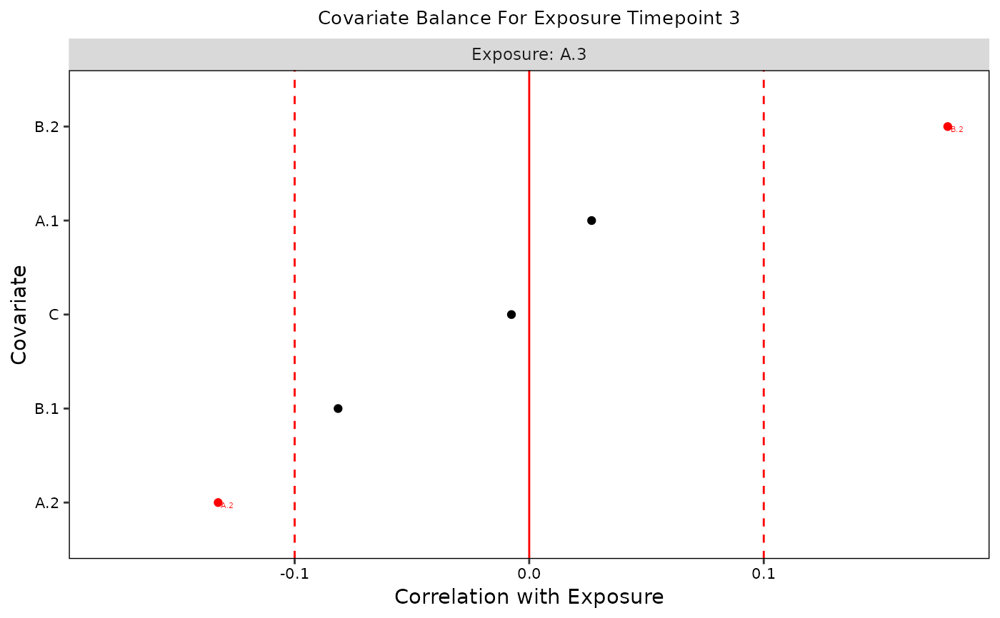

Draws on functions from the cobalt package to quantify the relations between exposure and confounders at each exposure time point according to the guidelines from Jackson, 2016 on how to assess balance for time-varying exposures.
Usage
assessBalance(
data,
obj,
weights = NULL,
balance_thresh = NULL,
imp_conf = NULL,
verbose = FALSE,
save.out = FALSE
)
# S3 method for class 'devMSM_bal_stats'
print(x, i = NA, t = TRUE, save.out = FALSE, ...)
# S3 method for class 'devMSM_bal_stats'
summary(object, i = NA, save.out = FALSE, ...)
# S3 method for class 'devMSM_bal_stats'
plot(x, i = NA, t = TRUE, save.out = FALSE, ...)Arguments
- data
data in wide format as: a data frame, list of imputed data frames, or
midsobject from themicepackage- obj
initialized MSM object from
initMSM()- weights
(optional) list of IPTW weights output from
createWeights()- balance_thresh
(optional) one or two numbers between 0 and 1 indicating a single balancing threshold or thresholds for more and less important confounders, respectively (default = 0.1)
- imp_conf
(optional) list of variable names reflecting important confounders, required if two balance thresholds are supplied
- verbose
(optional) TRUE or FALSE indicator for printing output to console. default is FALSE.
- save.out
(optional) Either logical or a character string. If
TRUE, it will output the result to a default file name withinhome_dirset ininitMSM(). You can load the data withx <- readRDS(file). To use a non-default file name, specify a character string with the file name. It will save relative tohome_dir. There might be naming conflicts where two objects get saved to the same file. In these cases, users should specify a custom name. default is FALSE.- x
devMSM_bal_stats object from
assessBalance- i
For multiply imputed datasets,
iselects which imputation to print results for. Default isi = 1. Withi = TRUE, all imputed datasets will be looped over. Withi = NULL, will average over all imputed datasets and summarize that. Ignored for non-imputed data.- t
Which exposure variable to use. Can either be an index from 1 to the number of exposures or a string containing the exposure variable name (e.g.
"A.3"). Witht = TRUE, all exposure variables will be looped over.- ...
ignored
- object
devMSM_bal_stats object from
assessBalance()
Value
a list containing balance statistics as a dataframe. It is the length of the number of datasets (1 for a data.frame or the number of imputed datasets)
See also
cobalt package, https://cran.r-project.org/web/packages/cobalt/index.html; Jackson, 2016 for more on assessing balance for time-varying exposures, https://pubmed.ncbi.nlm.nih.gov/27479649/
Examples
library(devMSMs)
data <- data.frame(
ID = 1:50,
A.1 = rnorm(n = 50),
A.2 = rnorm(n = 50),
A.3 = rnorm(n = 50),
B.1 = rnorm(n = 50),
B.2 = rnorm(n = 50),
B.3 = rnorm(n = 50),
C = rnorm(n = 50),
D.3 = rnorm(n = 50)
)
obj <- initMSM(
data,
exposure = c("A.1", "A.2", "A.3"),
ti_conf = c("C"),
tv_conf = c("B.1", "B.2", "B.3", "D.3")
)
# Prebalance
b <- assessBalance(data = data, obj = obj)
print(b)
#>
#> +----------+-----------+---------------+------------+----------+
#> | exposure | covariate | std_bal_stats | bal_thresh | balanced |
#> +==========+===========+===============+============+==========+
#> | A.1 | C | 0.0928 | 0.1 | 1 |
#> +----------+-----------+---------------+------------+----------+
#> | A.2 | C | 0.2457 | 0.1 | 0 |
#> +----------+-----------+---------------+------------+----------+
#> | A.2 | B.1 | -0.0223 | 0.1 | 1 |
#> +----------+-----------+---------------+------------+----------+
#> | A.2 | A.1 | 0.3289 | 0.1 | 0 |
#> +----------+-----------+---------------+------------+----------+
#> | A.3 | C | 0.0321 | 0.1 | 1 |
#> +----------+-----------+---------------+------------+----------+
#> | A.3 | B.1 | -0.0852 | 0.1 | 1 |
#> +----------+-----------+---------------+------------+----------+
#> | A.3 | B.2 | 0.2001 | 0.1 | 0 |
#> +----------+-----------+---------------+------------+----------+
#> | A.3 | A.1 | 0.0468 | 0.1 | 1 |
#> +----------+-----------+---------------+------------+----------+
#> | A.3 | A.2 | -0.106 | 0.1 | 0 |
#> +----------+-----------+---------------+------------+----------+
#>
#> Table: Balance Stats for All Exposure Time Points
# returns ggplot of balance stats for all exposure variables
plots <- plot(b, t = TRUE)
# can plot only specific exposure time periods
plot(b, t = "A.3")

plot(b, t = 3)
 # Weighted
f <- createFormulas(obj, type = "short")
w <- createWeights(data = data, formulas = f)
bw <- assessBalance(data = data, weights = w)
print(bw)
#>
#> +----------+-----------+---------------+------------+----------+
#> | exposure | covariate | std_bal_stats | bal_thresh | balanced |
#> +==========+===========+===============+============+==========+
#> | A.1 | C | -0.1136 | 0.1 | 0 |
#> +----------+-----------+---------------+------------+----------+
#> | A.2 | C | -0.0279 | 0.1 | 1 |
#> +----------+-----------+---------------+------------+----------+
#> | A.2 | B.1 | -0.0216 | 0.1 | 1 |
#> +----------+-----------+---------------+------------+----------+
#> | A.2 | A.1 | 0.1254 | 0.1 | 0 |
#> +----------+-----------+---------------+------------+----------+
#> | A.3 | C | -0.0584 | 0.1 | 1 |
#> +----------+-----------+---------------+------------+----------+
#> | A.3 | B.1 | -0.0606 | 0.1 | 1 |
#> +----------+-----------+---------------+------------+----------+
#> | A.3 | B.2 | -0.0311 | 0.1 | 1 |
#> +----------+-----------+---------------+------------+----------+
#> | A.3 | A.1 | -0.0195 | 0.1 | 1 |
#> +----------+-----------+---------------+------------+----------+
#> | A.3 | A.2 | -0.1877 | 0.1 | 0 |
#> +----------+-----------+---------------+------------+----------+
#>
#> Table: Balance Stats for All Exposure Time Points
plot(bw)
# Weighted
f <- createFormulas(obj, type = "short")
w <- createWeights(data = data, formulas = f)
bw <- assessBalance(data = data, weights = w)
print(bw)
#>
#> +----------+-----------+---------------+------------+----------+
#> | exposure | covariate | std_bal_stats | bal_thresh | balanced |
#> +==========+===========+===============+============+==========+
#> | A.1 | C | -0.1136 | 0.1 | 0 |
#> +----------+-----------+---------------+------------+----------+
#> | A.2 | C | -0.0279 | 0.1 | 1 |
#> +----------+-----------+---------------+------------+----------+
#> | A.2 | B.1 | -0.0216 | 0.1 | 1 |
#> +----------+-----------+---------------+------------+----------+
#> | A.2 | A.1 | 0.1254 | 0.1 | 0 |
#> +----------+-----------+---------------+------------+----------+
#> | A.3 | C | -0.0584 | 0.1 | 1 |
#> +----------+-----------+---------------+------------+----------+
#> | A.3 | B.1 | -0.0606 | 0.1 | 1 |
#> +----------+-----------+---------------+------------+----------+
#> | A.3 | B.2 | -0.0311 | 0.1 | 1 |
#> +----------+-----------+---------------+------------+----------+
#> | A.3 | A.1 | -0.0195 | 0.1 | 1 |
#> +----------+-----------+---------------+------------+----------+
#> | A.3 | A.2 | -0.1877 | 0.1 | 0 |
#> +----------+-----------+---------------+------------+----------+
#>
#> Table: Balance Stats for All Exposure Time Points
plot(bw)